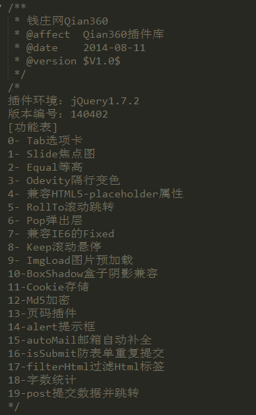

简单易用Seajs
背景
一个网站必然会涉及很多功能，tab选项卡、slide轮播图、pop弹出层、美化alert、paging分页等等等等，如果是企业网站那整合成一个js文件就够了，即 插件库 。
但是对于一个大的网站平台来说需要的功能可能会有很多，而且随着平台的发展，功能会越来越多。到最后会发展成怎样的情况呢？

这是 钱庄网 原先的插件库，已经接近20个插件了。想象一下，你在做一个简单的活动单页里面用到了tab选项卡，于是你把插件库引用了进来，这个时候你有想过你只是需要一个功能但是却把整个插件库引进来了，多大的浪费啊。该怎么解决这种问题呢?
我们希望一个页面按需引入，这个页面需要什么功能就引入什么功能。现在主流的工具有两种，amd规范的RequireJS、cmd规范的Seajs。
什么是Seajs
- Seajs是一个加载器 http://kb.cnblogs.com/page/211942/
- 遵循 CMD 规范模块化开发，依赖的自动加载、配置的简洁清晰。
- 兼容性
• Chrome 3+
• Firefox 2+
• Safari 3.2+
• Opera 10+
•IE 5.5+
基本应用
导入Seajs库
- 去官网下载最新的seajs文件， http://seajs.org/docs/#downloads
在页尾引入seajs：
然后在它下面写模块的配置和入口。
// seajs 的简单配置 seajs.config({ base: "../sea-modules/", alias: { "jquery": "jquery/jquery/1.10.1/jquery.js" } }); // 加载入口模块 seajs.use("../static/hello/src/main");
配置和入口
这里解释下配置和入口的意思。
配置
通常在配置上修改seajs的路径和别名。
seajs的 路径是相对于前面引入的seajs文件的 。假如是这样的目录结构：
我们平时如果我们在index.html上引用main.js路径应该是这样写的 script/main.js ，从news.html引用main.js就要这样写， ../script/main.js 。
而在seajs是相对于seajs文件的，一律直接使用 main.js 就OK了，是不是很方便呢？
既然这么方便那在什么情况需要配置呢？一般情况是用不到的。但是假如你的路径特别深 或者要做路径映射的时候它的作用就来了。下面介绍下常用的几个配置。
seajs.config({
// Sea.js 的基础路径（修改这个就不是路径就不是相对于seajs文件了）
base: ‘http://example.com/path/to/base/‘,
// 别名配置（用变量表示文件，解决路径层级过深和实现路径映射）
alias: {
‘es5-safe’: ‘gallery/es5-safe/0.9.3/es5-safe’,
‘json’: ‘gallery/json/1.0.2/json’,
‘jquery’: ‘jquery/jquery/1.10.1/jquery’
},
// 路径配置（用变量表示路径，解决路径层级过深的问题）
paths: {
‘gallery’: ‘https://a.alipayobjects.com/gallery‘
}
});
查看更多
入口
入口即加载，需要加载什么文件（模块加载器）就在这里引入。 sea.js 在下载完成后，会自动加载入口模块。
seajs.use(“abc/main”); //导入seajs.js同级的abc文件夹下的main.js模块的（后缀名可略去不写）
seajs.use()还有另外一种用法。
有时候我们写一个简单的单页并不想为它单独写一个js文件，选择在直接把js代码写在页面上，seajs通过 seajs.use() 实现了这个。 接收两个参数第一个是文件依赖(单个用字符串数组都可以，多个需用数组表示)，第二个是回调函数。
加载单个依赖
//加载模块 main，并在加载完成时，执行指定回调
seajs.use(‘./main’, function(main) {
main.init();
});
加载多个依赖
//并发加载模块 a 和模块 b，并在都加载完成时，执行指定回调
seajs.use([‘./a’, ‘./b’], function(a, b) {
a.init();
b.init();
});
这里回掉函数中的a和b参数是与前面的模块暴露出来的接口一一对应的。有时候也许只需要使用b的接口，但是也要把a参数写上。什么是暴露接口下面会解释。
模块开发
这里才是重点，其实也很简单就是一个书写规范（CMD）而已。
// 所有模块都通过 define 来定义
define(function(require, exports, module) {
// 通过 require 引入依赖
var $ = require(‘jquery’);
var Spinning = require(‘./spinning’);
// 通过 exports 对外提供接口
exports.doSomething = …
// 或者通过 module.exports 提供整个接口
module.exports = …
});
模块是通过define()方法包装的，然后内部痛过require()方法引入需要的依赖文件(模块)。（也可以引入.css文件哦~）
模块最好是面向对象开发的，这样最后可以方便的通过 exports.doSomething 或 module.exports 把模块的接口给暴露出来。如果你是写的是jq插件的话就不需要这个功能了，因为你的接口是写在jquery的对象里的。如果你不需要提供接口的话也可以不使用这两个属性哦！
事实上define方法还有另外几个参数，一般情况我们用不到。具体看 官方API 。
小结
其实Seajs的基本使用就这么简单，日常使用足够了，之前看官网的 5分钟教程 楞是没看懂，后来想想真的是5分钟学会啊,悟性太低- -||
注意事项
- 模块内的函数依赖必须交代清楚，防止模块在函数依赖加载前先加载出来。而且还增强了模块的独立性。
- 引入seajs的时候最好给